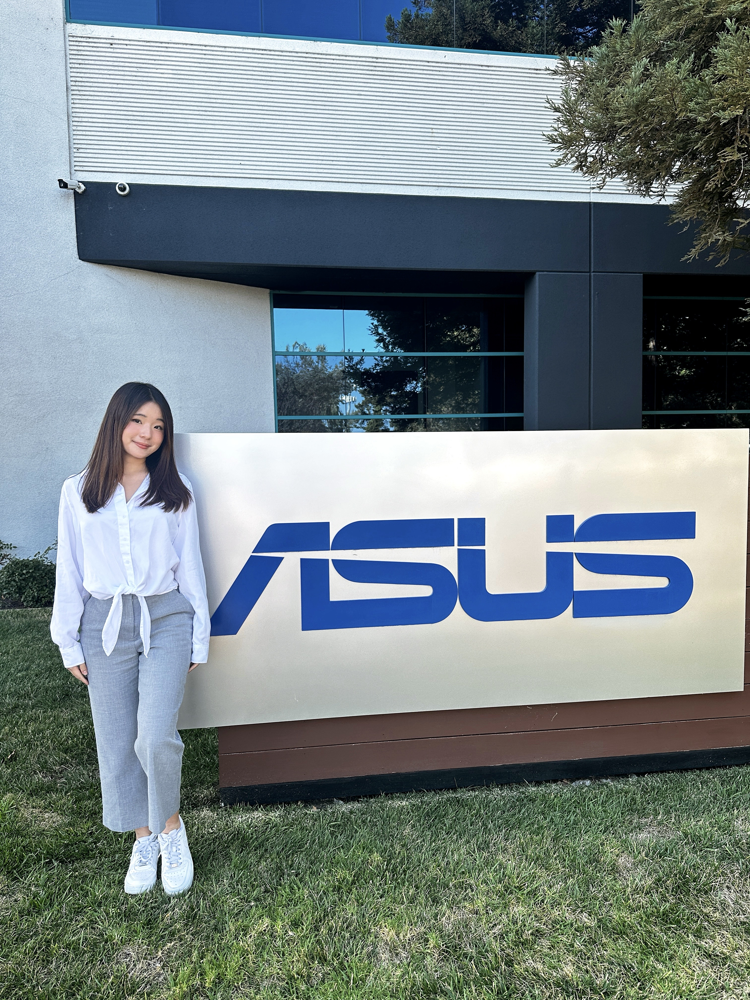
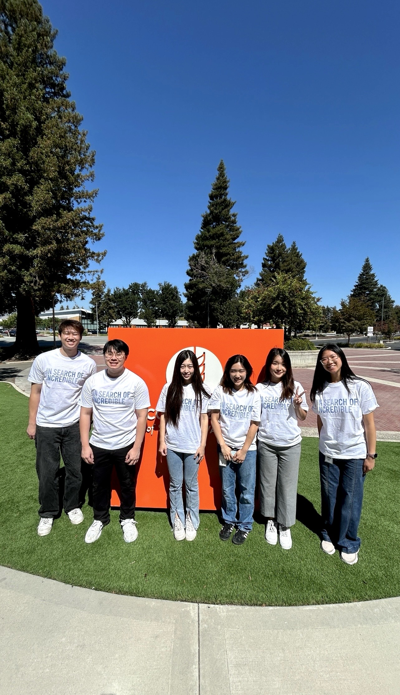
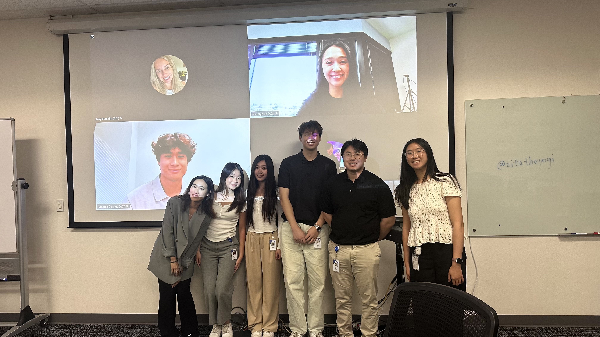
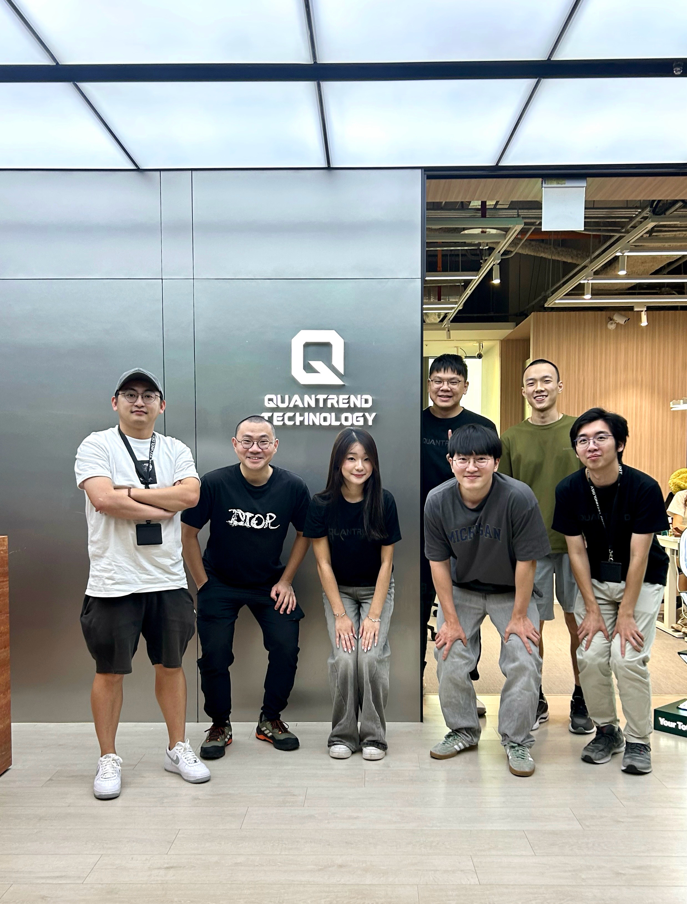
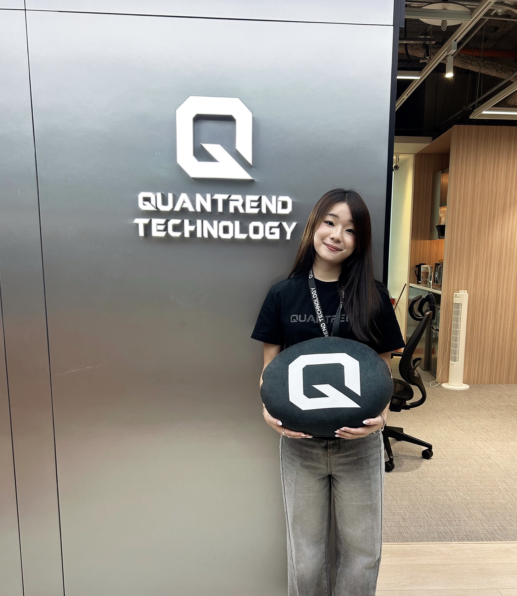
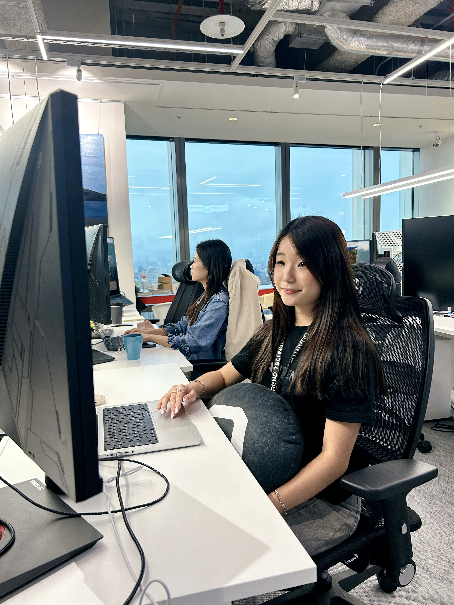

Work Experience
Designing and building scalable backend systems through hands on experience

Software Engineering Intern
ASUS Computer International
June 2026 – Aug 2026
- Developed an enterprise Retrieval-Augmented Generation (RAG) assistant using Node.js, Qdrant vector database, and a locally hosted LLM, enabling semantic search across 4,800+ indexed text and image records from enterprise branding guidelines
- Built an AI-powered image compliance verification system using OpenCV, FastAPI, and a vision-language model (VLM), reducing manual review effort by 80%+ through automated logo, color, and branding rule validation
- Engineered Node.js and Python backend services across 20+ REST API endpoints, integrating vector retrieval, computer vision, and VLM inference into a unified multimodal pipeline for document search and image compliance verification
- Improved retrieval quality by ~30% through intent routing, brand-aware metadata filtering, query expansion, and custom reranking, increasing the relevance and accuracy of AI-generated responses
- Enhanced document ingestion workflows for 500+ internal IT knowledge base documents, improving content accuracy and completeness while standardizing content into a unified Markdown repository for future semantic search and LLM-powered retrieval
Backend Infrastructure Engineering Intern
Quantrend Technology
June 2025 – Aug 2025
- Built a Rust-based historical market data pipeline processing 1M+ order book updates daily across five cryptocurrency trading pairs, reconstructing validated order book snapshots and uploading them to MongoDB
- Engineered a high-performance order book reconstruction system from compressed market data, reducing daily processing time by 60% via parallel processing with Rayon and milestone recovery
- Designed a data validation pipeline with cross-source price validation, bid/ask spread analysis, and automated gap detection, executing 1,400 API requests per minute to ensure high data integrity for quantitative systems
- Developed a real-time market depth synchronization service that captured 500-level Binance order book snapshots every five minutes and stored them in MongoDB for downstream quantitative analysis
Software Engineering Intern
Cathay Financial Holding Co. Ltd.
June 2024 – Aug 2024
- Developed a full-stack web application with a Flask backend, integrating an AI-powered chatbot and predictive analytics to support intelligent user interactions and data-driven insights
- Integrated OpenAI GPT with ChromaDB vector database for retrieval-augmented generation, enabling efficient query resolution across domain-specific documents and improving information access speed by ~30%
- Engineered a PyTorch-based time-series prediction pipeline with modular preprocessing, scaling, and evaluation components, improving ML model accuracy by ~15% over baseline and reducing error propagation in downstream features
- Implemented unit and integration testing with pytest and Flask test clients, reducing backend integration bugs by ~25%
ASUS Internship - Summer 2026
This summer, I interned at ASUS Computer International, where I worked on AI-powered search for an internal brand platform. I got to work across backend systems, LLMs, vector search, and image analysis throughout the summer. Here are a few highlights!



Quantrend Internship - Summer 2025
This summer, I interned at Quantrend Technology, a top tier AI driven quantitative trading firm and one of the world’s leading crypto market makers. I worked on backend systems supporting high frequency crypto markets in a hands on, fast paced, and incredibly rewarding environment. Here are a few highlights from the summer!


